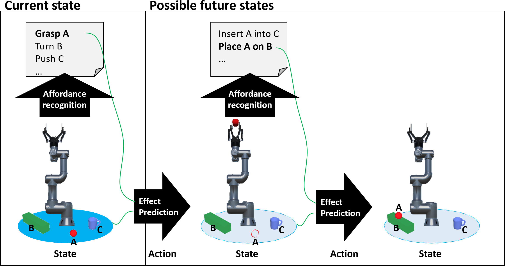
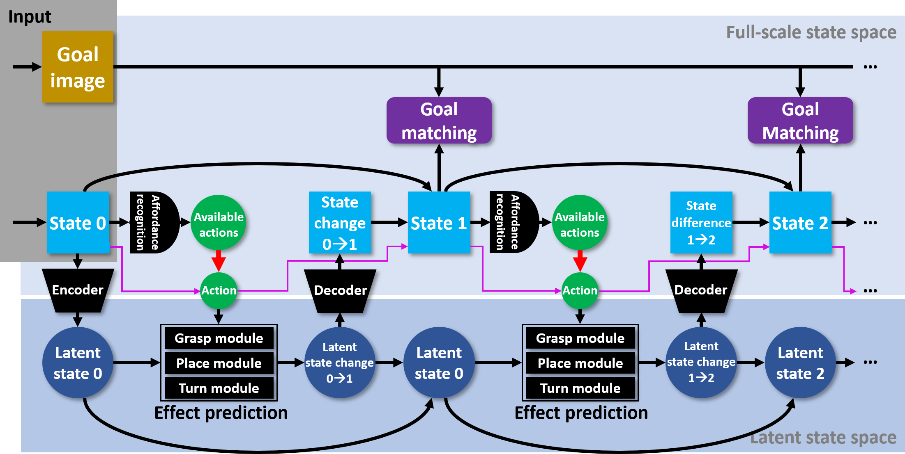
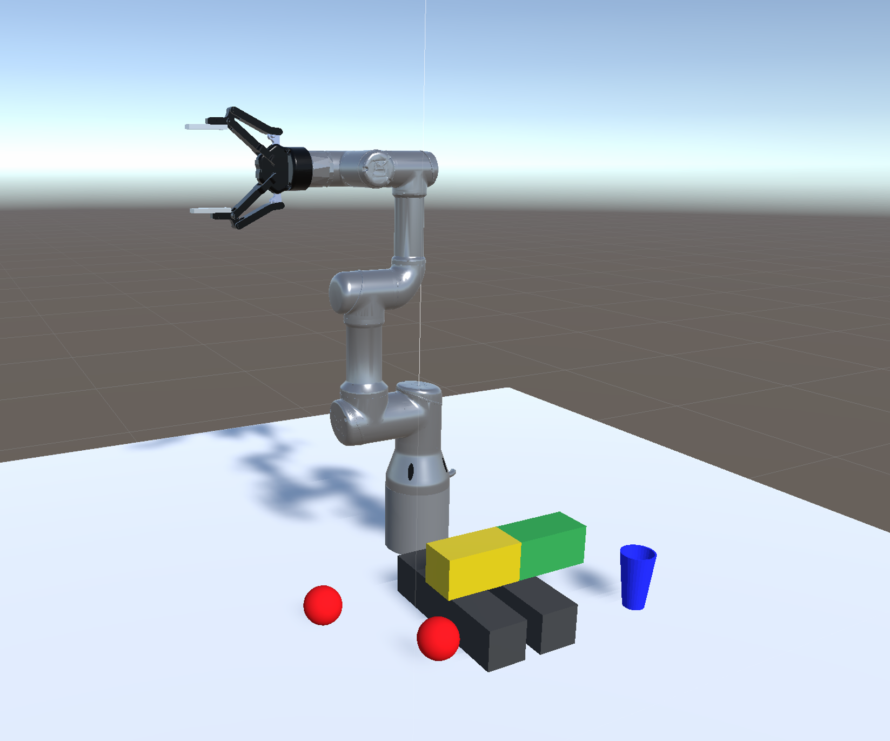

Affordance-based planning operates by recognising affordances in a scene and reasoning over affordance effects. Recognition of affordances allows a planner to focus on limited sets of actions that are meaningful in a particular situation, instead of considering its full action repertoire in every situation. This semantically structures the problem space, and makes it possible to keep action planning tractable for complex scenes and high-dimensional action repertoires.
Traditionally, the effects of affordances are specified semantically too, as symbolic rules. However, in many cases, fully formalising the possible outcomes of an action is impractical. For examples, placing object X on object Y may result in X being on Y, but only if that object configuration is stable. Whether an object configuration is stable or not is hard to formalise without coding ad-hoc physics into the affordance effect rules. Also, symbolic rules can only produce symbolic representations of future states. These lack the granularity required for accurately anticipating what affordances will become available or unavailable as a result of executing a given affordance.
Our approach retains affordance recognition to structure the task domain. However, to avoid the limitations of symbolic effect rules, we replace effect rules by sub-symbolic prediction of affordance effects. Specifically, given a state image and a parametrised affordance, we predict the resulting state as an image. The ability to predict affordance effects is learned from experience data. This avoids the need for manual specification of affordance effects, and makes it possible to handle hard-to-formalise effects.
The system thus combines two subsystems:
Because predictions of post-execution states are images again, affordance sets for future states can be found by passing the predictions of those states through the recognition subsystem. By repeating affordance recognition and state prediction, we can expand a tree of possible futures, structured by affordances. Given a goal specification, we expand the tree to search for accessible future states that satisfy the goal. Here we use small images to specify goal conditions, and compare these goal images to regions of the predicted state images to match goals to predictions.
Both the recognition and prediction subsystems are implemented as neural networks. For recognition we use a modified ScaledYOLOv4 network [1].
For prediction we use a modular architecture consisting of an encoder for mapping states to latent representations, a prediction module for performing prediction in latent space, and a decoder to map latent state predictions into images. This net is based on our EM*D architecture [2].
Prediction takes a differential approach. We predict 1) a mask image indicating which parts of the state image will change as a result of affordance execution, and 2) the new content for the changing regions. We merge the new content into the input state image on basis of the mask image, to obtain the new state prediction image.
The prediction module contains a submodule for each affordance type. The affordance’s type determines which submodule is used, and its parametrisation (positional coordinates etc.) is given as additional input to the submodule.
We test the system using a simulation environment containing a UR3 arm, blocks, cups and balls. The environment is constructed in Unity, and the UR3 is controlled via ROS. ROS-Unity integration is provided by the Unity Robotics Hub [3]. A view from a top-down RGBD camera provides state images for the recognition and prediction processes. We implement three affordances: grasping, placing, and turning. The turn affordance rotates an object in-place by 90 degrees.
This simulation environment is also used to generate training data for the recognition and prediction networks. By performing sequences of affordances we obtain corresponding sequences of state images. These sequences are used to train the prediction network. We also store lists of all affordances available in each state, for training the recognition network.
We perform affordance recognition in a form that is directly actionable for the robot. In addition to confidence and position coordinates, recognition results also provide a grasp angle for each affordance. Additionally, it includes a symmetry value indicating whether the grasp angle affects the outcome (to allow for efficiency improvements in the planning process). We constrain affordance recognition to affordances that can be performed by the robot in its present state. So, we take the current state of the robot into account. When the robot is holding something already, it can perform place affordances, but cannot grasp or turn objects. Conversely, when the robot is not holding something, it can perform grasp and turn affordances, but no place affordances.
The prediction network takes a state image and an affordance sequence as input, and predicts the sequence of state images that would result if that affordance sequence were performed from the input state. Below are examples of test sequences, alongside the corresponding predictions generated by the prediction network.
Planning goals are provided as image patches that show the goal condition. For example, a goal patch may show the blue cup sitting on the yellow side of the coloured block. To generate a plan, we repeat affordance recognition and state prediction to expand a tree of possible futures. Each possible future state is expressed as a prediction of that state in image format. Recognition steps at the same depth in the tree can be parallelised, as can prediction steps. The quality of a plan (affordance sequence) is calculated as the difference between the goal patch and the region of the predicted state image that most closely matches the goal patch. Plan search selects the affordance sequence that minimises this difference.
We can also perform planning with negative goals. In this case the system has to find a plan to stop the condition shown in the goal patch from holding. This is achieved by maximising instead of minimising the difference with the goal patch.
The video below shows plans generated and executed for 10 test tasks.
[1] Chien-Yao Wang, Alexey Bochkovskiy, and Hong-Yuan Mark Liao, "Scaled-YOLOv4: Scaling Cross Stage Partial Network", arXiv:2011.08036, 2020.
[2] Daisuke Tanaka, Solvi Arnold, and Kimitoshi Yamazaki, "EMD Net: An Encode–Manipulate–Decode Network for Cloth Manipulation", IEEE Robotics and Automation Letters, vol. 3, no. 3, pp. 1771-1778, July 2018, doi: 10.1109/LRA.2018.2800122.
[3] Unity Robotics Hub. github.com/Unity-Technologies/Unity-Robotics-Hub